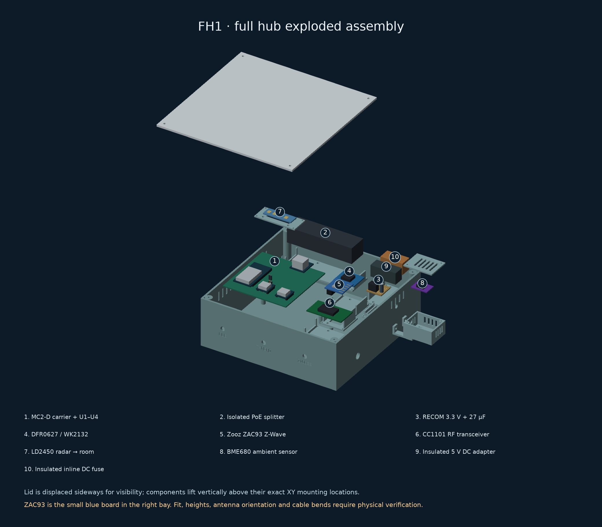
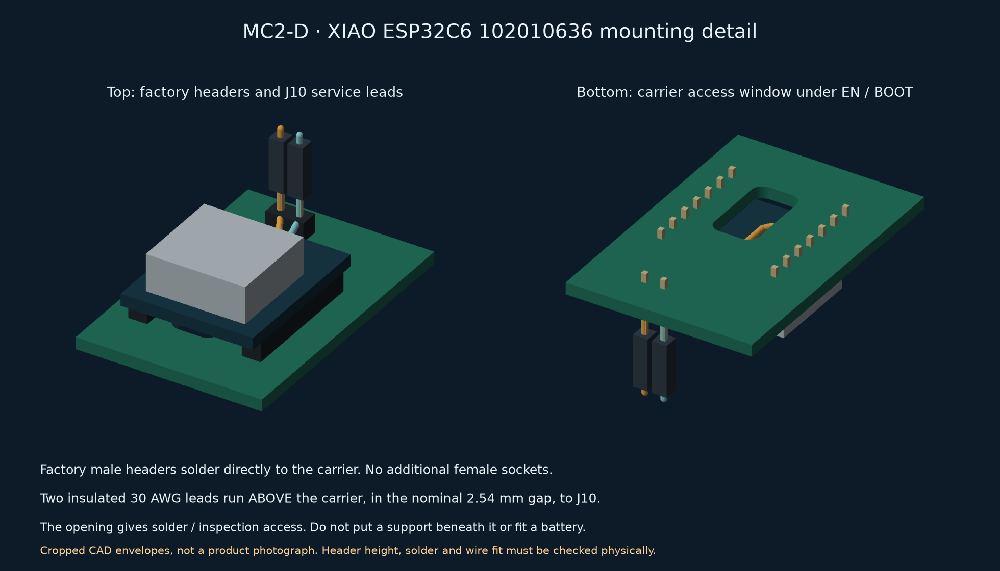
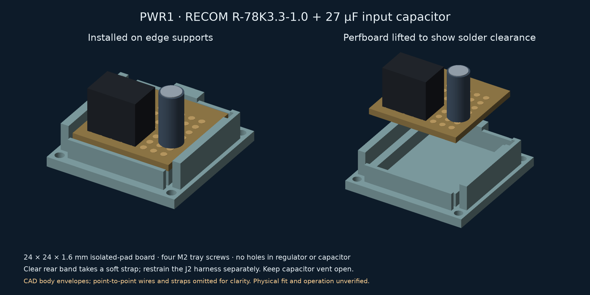

FH1 — complete MC2-D radio-hub enclosure
Current Thread board: Seeed Studio XIAO ESP32C6, pre-soldered SKU 102010636. This FH1-MC2-D-PWR1 package follows the MC2-D carrier and its compact XIAO footprint. It retains the 215 × 215 × 78 mm shell, RECOM power tray and the three separate 150 mm Taoglas CAB.618.E coax routes. The carrier must be MC2-D; a TinyC6 board and its firmware are not interchangeable with this build. See the source and fit ledger for the header stack, nominal dimensions and remaining physical checks. Use the MC2-D RCP firmware to select the XIAO's external antenna.
This package adds physical accommodation for the whole hub: the MC2-D carrier, Zooz ZAC93, DFR0627 UART bridge, CC1101, isolated PoE splitter, 3.3 V regulator, DC adapter, fuse, LD2450 and an attached BME680 pod. It supersedes the smaller carrier-only housing for a complete assembly. It is an engineering prototype, with digital checks and explicitly unmeasured fit assumptions.
Build guide · Open illustrated layout · Electrical assembly · Component inventory · Sources · Parameters · Digital verification

The exploded drawing separates parts for visibility. The component shapes are simplified envelopes, not detailed supplier STEP models. Use the numbered plan for locations and the electrical guide for signal names; a render is not a mating-side connector diagram.

All three radios use factory male headers soldered directly to the carrier. The model allocates a nominal 2.54 mm gap below each radio board and routes coax at z=32 mm before dropping to the connector. The factory spacer and actual RF socket heights still require measurement; see the stack and coax evidence.
XIAO ESP32C6 factory-header mounting

Buy 102010636 with factory-soldered male headers. Solder those pins directly into the MC2-D carrier; no female sockets are added. The nominal 2.54 mm header plastic leaves a gap for two insulated 30 AWG EN and BOOT leads to J10. Keep wire outer diameter at most 0.8 mm and underside solder joints within 1.5 mm of the XIAO PCB. Measure the actual header gap before fitting the board.
Make the two fine-wire joints before seating U2. Wires stay above the carrier and emerge at the lower edge of the XIAO toward J10. The window below the service pads provides inspection/solder-tool access; it is not a wire route under the carrier. The enclosure has no support beneath that window. Keep battery pads unconnected. Program the loose board over USB before soldering; post-assembly USB plug insertion has not been qualified.
RECOM power module and its input capacitor

PWR1 replaces the Pololu mount with a 24 × 24 mm perfboard tray. The carrier remains MC2-D; J2 still carries fused 5 V, ground, 3.3 V return and ground. Both ground wires terminate at the common regulator ground node. The exact parts are RECOM R-78K3.3-1.0 and Panasonic EEU-FS1H270, 27 µF / 50 V, with the capacitor at the regulator input. The converter does not take raw PoE or battery voltage.
Cut 1.6 mm isolated-pad FR4 to 24 × 24 mm, deburr it, and clear a 2 mm copper-free rim plus the rear y=20.5…23 mm restraint band. Assemble the electrical perfboard layout before mounting. The printed ledges support only the board edges, 12 mm above the case floor origin. Seat the regulator body against the insulating board and keep solder and wires at most 2 mm below its underside; this leaves 1.6 mm above the tray floor. The capacitor's maximum body allowance is 5.5 mm diameter × 12.5 mm, including published tolerances. Leave the vent unobstructed.
A soft nonconductive strap crosses the blank rear band; a separate loop restrains the J2 cable. Do not tighten a strap over the capacitor top or use its leads as a cable anchor. The tray screws to the base with four M2 screws; neither the regulator nor capacitor has mounting holes. The new tray and base must be printed together because their mounting pattern changed. The outer shell, lid, RF holes and the other trays retain their RF1 geometry. Fit and temperature under simultaneous load still need physical verification.
ZAC93 location and attachment
The ZAC93 is beside the carrier in its own removable cradle. Its factory 2×5 socket faces downward into the opening, leaving space for a wired mating header. The five-wire cable goes to carrier J4, not directly to the ESP32. The adjacent DFR0627 / WK2132 connects to J3. Its UART1 provides the ZAC93's serial link. The full wiring drawing shows the pin remapping.

Orient the ZAC93's stock antenna toward the outer plastic wall. Keep the antenna area free of straps, wires and metal; the lid-mounted radar is placed away from that area. Do not drill mounting holes in the ZAC93. The printed cradle uses edge support and nonconductive retention. Trial socket/board heights must be compared with the actual delivered revision before tightening or plugging in the harness.
Print package
Download the complete FH1 print ZIP — all 14
current STL files, a print-first checklist, and a
machine-readable quantity/hash manifest. The archive
contains 13 installed pieces, one trial coupon and one optional blank. Print
two copies of pod-arm.stl. A single STL is intentionally supplied for that
identical pair. Reuse the ZAC93 trial cradle if it fits; do not print a second
cradle just for final assembly.
- First: the fit coupon and ZAC93 cradle. Check the actual socket, mating header, fasteners and SMA bulkhead with power disconnected.
- Next: measure each delivered module and trial-fit the remaining small trays, radar holder and pod pieces. Resolve the unknown CC1101, adapter and fuse dimensions before printing the main shell.
- Last: the large base and lid. The port blank is optional and only closes an unused trial opening. No G-code or combined assembly model is included.
The illustrated print table lists every quantity, print stage and fit check. Import STLs at 100% scale; the archive is a convenient download, not evidence of physically verified fit.
Print each STL separately in its supplied bed orientation, in millimetres. The assembly and exploded SCAD files are inspection models; do not print either as a single solid.
- Base and lid: main housing, carrier supports, fixed-base RF bulkheads, cable passages and mounting points.
- Z-Wave cradle: ZAC93 support with underside socket space.
- UART-bridge tray and CC1101 tray.
- PoE-splitter tray, buck-regulator tray and DC-adapter/fuse utility tray.
- Radar holder: LD2450 support behind the lid's room-facing window. Retention must not cross the active antenna face.
- BME680 pod, pod lid and two pod arms: an attached ventilated compartment outside the warm main shell.
- Fit coupon: print first to check fastener pilots and the selected SMA bulkhead against actual hardware.
- CC1101 port blank: optional closure for an unused trial feed opening. It is not an RF connector or antenna adapter.
- Assembled SCAD and exploded SCAD.
The main body is 215 × 215 × 78 mm. The attached pod increases body width to 277 mm before antenna and cable projection. The largest individual print is 215 × 215 mm. The selected TRONXY XY-3 (original) has a nominal 310 × 310 × 330 mm print volume, leaving room for a brim. A generic 220 × 220 mm bed leaves only 2.5 mm per edge; inspect the slicer's printable region and brim before trying it on that smaller machine.
Use electrically insulating, unfilled material and validate it at the actual operating temperature. Metal/carbon-filled filament is unsuitable around the radio/radar apertures. The initial radar window is 0.8 mm thick, with a nominal 12.4 mm gap from the antenna face to its inner surface. These follow the Hi-Link radome guide as a starting point; actual material, board height and detection still need a test. Inspect bridging/supports around horizontal openings, remove debris, and check the slice before inserting any electronics. This ventilated enclosure has no ingress-protection or structural-load rating.
Fasteners and retention
The initial hardware schedule is:
- 4 × M2.5 carrier bolts with nonconductive nuts and suitable washers.
- 4 × M3 lid screws for the tested printed pilots.
- 24 × M2 screws: four for each of the six removable trays.
- One soft nonconductive strap for the RECOM perfboard; no regulator mounting screws.
- 4 × M2 radar-holder screws.
- 2 × M3 through-bolts and nuts for the pod arms at the main wall.
- 2 × M2 bolts and nuts for the pod-to-arm connection; 2 × M2 pod-lid screws.
- At least nine soft nonconductive module-retention straps: two for the splitter, one each for ZAC93, DFR0627, CC1101, DC adapter, fuse and BME680, plus the regulator perfboard. Add the radar's board-end restraints and separate loose cable-restraint loops.
Select screw length from the actual printed stack and the mount records in verification.json. Check pilots with the coupon first. Fasteners must not bottom out, crack a boss, contact a circuit or intrude into a cable/antenna space. Nuts, washers and real screw heads occupy space too; verify those during the unpowered dry fit.
Fit the complete assembly
- Print the coupon and ZAC93 cradle first. Test the actual ZAC93 socket, mating header, antenna clearance and soft retention, with power disconnected. Confirm fastener pilots and bulkhead engagement before printing the base.
- Install the carrier on its four native mounting holes. The separate U1–U4 modules remain soldered to that carrier. Check the underside solder tails, board height and Ethernet-jack support/access with the actual populated PCB.
- Secure the peripheral trays to the base, then retain each module in its own tray. Place insulation only at component-free contact points. Keep solder tails, capacitor vents and radio antenna regions clear. A cable connector alone is not retention.
- Install the Waveshare POE-SPLITTER-25W-5.5-2.1 finished isolated splitter with its original case intact. This bay is not designed for the historical Silvertel EvalPoE arrangement. Secure the DC adapter and fuse in their utility tray. Route its data-only RJ45 tail to WIZ850io; route fused 5 V to J1 and the RECOM perfboard assembly to J2 as the electrical guide specifies.
- Install the three fixed-base SMA bulkheads and route their separate Taoglas CAB.618.E 150 mm coax leads to BLE, Thread and Zigbee. The checked routes use a conservative 144 mm usable-length budget, retain 25 mm service slack and have 6.8 mm minimum-radius bends. Measure actual leads; the 6 mm shortfall is a project allowance, not a manufacturer tolerance guarantee. Use loose, protective soft loops at the restraint points; never tighten a cable tie directly onto micro-coax. Keep the existing CC1101's separate 433.92 MHz feed matched to its actual connector. The trial side opening is not proof that an unknown adapter fits.
- Fit the ZAC93's remapped J4 harness, the J3 bridge harness and J5 RF harness. Leave all connectors accessible and restrain wires away from antenna areas, screw tips and the closure seam. Follow the actual module's labels.
- Attach the BME680 pod using both arms. Its air gap and ventilation reduce heating but do not establish temperature accuracy. Route the I²C harness through the reserved passage; check bus rise time and reliability with the final cable. Mount the LD2450 to the lid holder facing the room and connect J6. Leave service slack and unplug this lead before fully removing the lid.
- Dry-fit the closed enclosure. Check that nothing is compressed and the input Ethernet plug, internal RJ45 latch, fuse and module connectors can be serviced. Test rails, firmware and each radio with the lid open, then repeat under simultaneous load with the lid closed. Follow the RF commissioning procedure.
Evidence and remaining physical checks
The generator reads the current native MC2-D carrier geometry and
components.json, rather than assuming that all boards are interchangeable.
verification.json records the modelled component bounds, keepouts, mount
positions, cable-route allowances, print-part dimensions and source hashes.
These checks are against declared geometry, not measurements of your parts.
ZAC93's nominal plan dimensions are sourced, but its delivered revision and socket stack need inspection. CC1101's existing vendor variant is unknown. DC-adapter and fuse-holder dimensions are allocations until exact parts are selected. The splitter's actual captive tails, plug boots, connector heights, coax bending and retention force need a dry fit. No digital pass resolves those unknowns. Use the parameters to revise the affected tray/clearance before printing if a delivered part differs.
The main case is intended to present LD2450's face toward the room. Follow the
sensor manufacturer's mounting/orientation guidance; a ceiling installation
requires its own detection test. Compare BME680 to an independent ambient
reference after thermal equilibrium. Record physical results separately;
fit_verified: false must remain false until those checks are actually done.
Rebuild and check
Install the pinned mechanical/requirements.txt in a Python virtual environment,
then run these commands from the repository root:
python mechanical/full-hub/build.py
python -m unittest discover -s mechanical/full-hub -p 'test_*.py'
python mechanical/full-hub/build.py --check
python hardware/external-antenna/render.py --check
python tools/check.py
The deterministic ZIP uses an explicit part allowlist, sorted entries, fixed
1980 timestamps and uncompressed storage to avoid platform-specific compressor
output. Its manifest validates every STL against the checked-in verification
hashes and records the two-arm quantity. build.py --check checks CAD geometry
portably, then independently verifies the ZIP against the stored STL bytes.
To rebuild only the archive after a valid CAD generation, run
python mechanical/full-hub/print_package.py (or add --check to verify it).
The CI checks the full-hub package alongside the retained carrier-only and firmware regression targets. AI appearance images are separate presentation assets; rebuilding the CAD does not regenerate them.